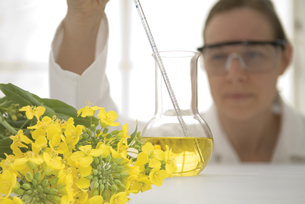
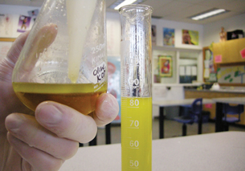

Module 2—Talking Energy
Lesson 1—Alternative Fuels: Biodiesel

© Sophia Winters/shutterstock
 Get
Focused
Get
Focused
Many ecotours have made the decision to use biodiesel in their vehicles where possible. What is biodiesel and how does its use promote sustainability? In Lesson 1 you will learn about biodiesel. You will begin to evaluate its properties and suitability as a fuel. To assist in your evaluation you will make and test biodiesel.
Consider the following question as you complete Lesson 1:
- What makes a good fuel?

Module 2: Lesson 1 Assignment
In the Lesson 1 Assignment you will complete a virtual investigation in which you will make and test biodiesel. Download a copy of the Module 2: Lesson 1 Assignment to your computer now. You will receive further instructions on how to complete this assignment later in the lesson.